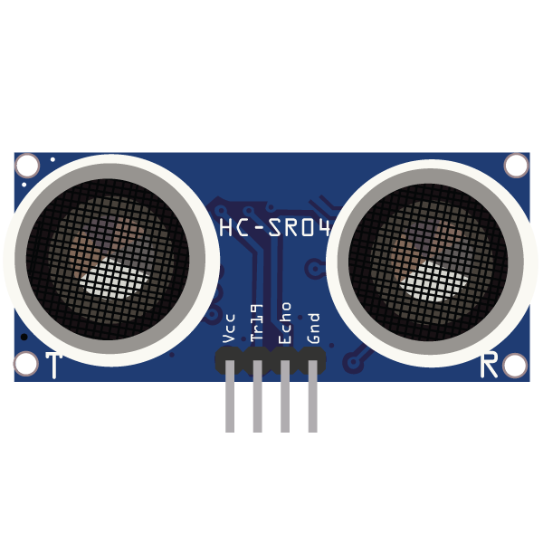

← Kembali
HC-SR04

Sensor ultrasonik yang digunakan untuk mengukur jarak
berdasarkan pantulan gelombang suara ultrasonik.
Tujuan Pembelajaran
- Menjelaskan fungsi sensor HC-SR04.
- Mengidentifikasi fungsi setiap pin HC-SR04.
- Melakukan wiring HC-SR04 ke Arduino Uno.
- Menjalankan simulasi HC-SR04 pada Wokwi.
Fungsi Pin
| Pin |
Fungsi |
| VCC |
Memberikan catu daya 5V |
| TRIG |
Mengirim gelombang ultrasonik |
| ECHO |
Menerima pantulan gelombang |
| GND |
Ground |
Cara Kerja Sensor
-
Pin TRIG mengirim gelombang ultrasonik.
-
Gelombang mengenai objek.
-
Gelombang dipantulkan kembali.
-
Pin ECHO menerima pantulan.
-
Arduino menghitung jarak objek.
Wiring Arduino
| HC-SR04 |
Arduino |
| VCC |
5V |
| GND |
GND |
| TRIG |
D9 |
| ECHO |
D10 |
Kesalahan Wiring yang Sering Terjadi
- TRIG disambungkan ke pin yang salah.
- ECHO disambungkan ke pin yang salah.
- VCC tidak terhubung ke 5V.
- Ground tidak terhubung.
- VCC dan GND tertukar.
Simulasi
Klik tombol berikut untuk mencoba simulasi HC-SR04.
Jalankan Simulasi
Analisis Hasil Simulasi
Saat simulasi dijalankan, sensor HC-SR04
akan mengukur jarak objek menggunakan
gelombang ultrasonik.
Semakin dekat objek dengan sensor,
nilai jarak yang tampil pada Serial Monitor
akan semakin kecil.
Semakin jauh objek dari sensor,
nilai jarak akan semakin besar.
Mini Quiz HC-SR04